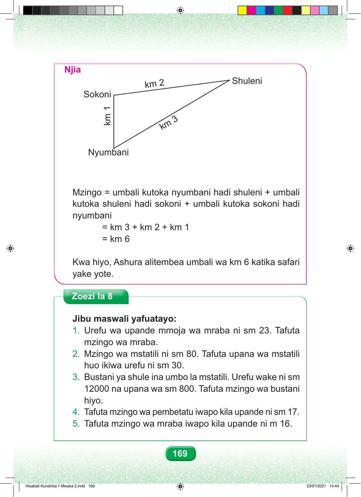

Njia km 2 3 m k Mzingo = umbali kutoka nyumbani hadi shuleni + umbali kutoka shuleni hadi sokoni + umbali kutoka sokoni hadi nyumbani = km 3 + km 2 + km 1 = km 6 Kwa hiyo, Ashura alitembea umbali wa km 6 katika safari yake yote. Zoezi la 8 Jibu maswali yafuatayo: 1. Urefu wa upande mmoja wa mraba ni sm 23. Tafuta mzingo wa mraba. 2. Mzingo wa mstatili ni sm 80. Tafuta upana wa mstatili huo ikiwa urefu ni sm 30. 3. Bustani ya shule ina umbo la mstatili. Urefu wake ni sm 12000 na upana wa sm 800. Tafuta mzingo wa bustani hiyo. 4. Tafuta mzingo wa pembetatu iwapo kila upande ni sm 17. 5. Tafuta mzingo wa mraba iwapo kila upande ni m 16. 169 1 mk Shuleni Sokoni Nyumbani Hisabati Kundirika 1 Mwaka 2.indd 169 23/07/2021 14:44